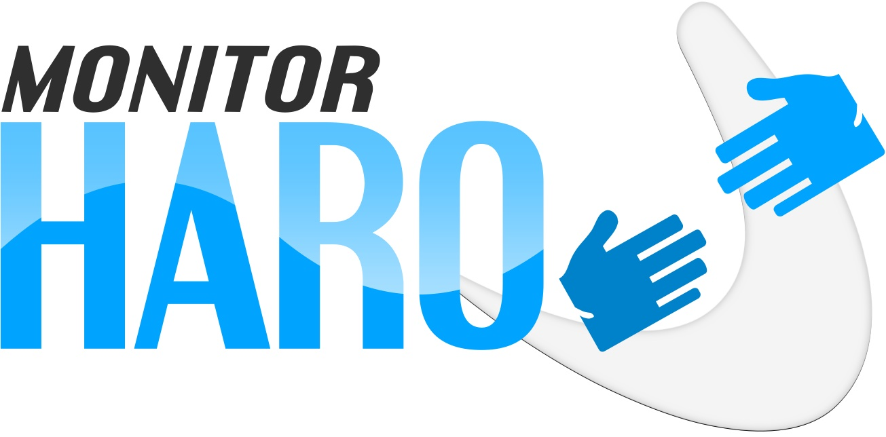

We monitor HARO so you don’t have to
Pitch all the right journalists and save 7+ hours a month for just $28


100%
Money-Back
Guarantee
HARO is great for receiving requests from journalists that might want to feature you, but it's a lot of work to scan all the requests and do it quickly to respond within deadlines. Our CEO used to spend 5 minutes scanning each email. At 3 emails a day, that’s almost 8 hours a month!
Our service team at MonitorHARO helps you by selecting the perfect requests for you to pitch, and saves you time by emailing you only when we find requests that are a good match. We scan not just the subject line of the requests, but the full description of every request, to make sure we find all the right matches for you.
Trying to find the time to scan through every HARO email
was starting to be a real chore. I figure I spent about 3-6
minutes per email, but what really happened
is that I failed to scan quite a few emails and lost some really
good opportunities. Now that I use
MonitorHARO, I get every single pitch that's relevant to me, without spending all that time, and I've made
a lot more progress on my PR.
— Þorgils, CCO
I used to diligently spend about 15 minutes a day on HARO and decided to try MonitorHARO
to save myself all that time. I was
pleasantly surprised that MonitorHARO finds more relevant PR opportunities
than I used to, including long-shot opportunities with huge
outlets, that I wouldn't have thought of pitching but could be huge breaks if one pans out.
— Jóhann, entrepreneur